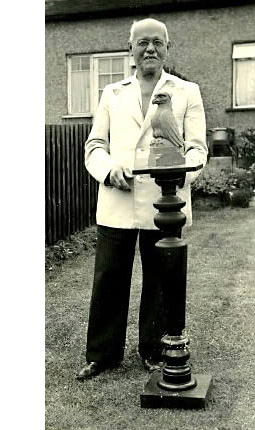

| by Keith Bates |
|
Ask anyone old enough to know a bit of local history, “Who created
the Liver Birds?” and there’ll be shoulder shrugs, head-scratching,
and answers like, “I must have sagged school that day”. In fact, even if you’d been a 100% attender at the Dixie Dean Primary, you still wouldn’t have been able to find out. Not a chance, because the artist who crowned the Royal Liver Building, and gave three-dimensional form to Liverpool’s world famous symbol has been forgotten for the best part of a century. And what really sticks in one’s craw is finding out that this monumental omission regarding something as Liverpudlian as a lolly-ice, is not just some absent-minded, half-cocked, art historical oversight. This gaping hole in Liverpool’s collective consciousness was connived, coldly calculated by the very custodians charged with the stewardship of that knowledge. In 1887, a 21 year old wood carver from Stuttgart, Carl Bernard Bartels, came to Britain on his honeymoon. He fell in love with England and decided to make his home here. In the early years of the twentieth century, living and working in Harringay, London, Carl Bernard entered and won a competition to design Liver Birds for the top of Walter Aubrey Thomas’s Liver Building, groundbreaking in its use of reinforced concrete. Ask the Art institutions of Britain, as I have done recently, “Who created the Liver Birds?”, and they’ll refer to the standard repository, Terry Cavanagh’s Public Sculpture of Liverpool. The trouble is that Terry, like the rest of us, is a victim of historical filtering and pilfering when he states that the Liver Birds were made by George Cowper and the Bromsgrove Guild. Stricly speaking he’s not wrong, only a foundry with a dedicated team of craftsmen like the Bromsgrove Guild could make metal sculptures the size of a double-decker bus. The Guild, which closed in 1966, made the gates of Buckingham Palace. But that’s not the point, is it? Who actually conceived, designed and carved the Liver Bird? Who was the artist? Well, not only was I not told, but no-one at my old school knew, because all records of Carl Bernard’s achievements were purposefully and systematically destroyed. And why? Because we were at war with Germany, and how embarrassing to have your city’s symbol created by one of ‘them’. Even if the supposed enemy had been a naturalised British citizen, resident here for twenty years! The guardians of our City effectively erased all mention of Carl Bernard Bartels. And the sorry saga goes from bad to worse, for not only did the the British authorities imprison Bartels in an internment camp on the Isle of Man, he was also, when war was over, forcibly repatriated to Germany, leaving behind his wife and children in England. In the late 1990s, some descendants of Carl Bernard made a pilgrimage to Liverpool. Tim Olden, great grandson of the artist, met with city representatives in an effort to begin a process of rediscovery and long overdue recognition. Historical and architectural websites are at last starting to mention Bartels’ contribution. And the momentum gathered pace with the intention of restoring Bartels’ good name and place in history in time for the ‘08 celebrations. Until recently, no photograph of Carl Bernard could be found in books or on the internet. In 2003, Liverpool writer Tom Slemen posted a request for information on the Bartels page of the website Genealogy.com, but to no avail. Then, in August 2005, Bartels's great grandson, Tim Olden, was surfing the web looking for references to his great grandfather, and found himself looking at Gerry Jones’s Third Lyver Bird website. Gerry, who had just updated his site with a few snippets of information which I’d sent him about Carl Bernard, was made up to receive an email from Tim which included two photographs of the elusive Mr. Bartels. At last, there was the face behind the legend. The Third Lyver Bird site also contains other details that help flesh out the Bartels story. Gerry mentions that three quarters of Liverpool butchers were of German extraction prior to World War One. At the end of the war the figure was zero, hiding a multitude of xenophobic injustices. I can recall my father, years ago, telling me the tale of a butcher in Garston, a real gentleman, who became the victim of race hatred, yet such uncomfortable memories risk being lost, precisely at the time we need to treasure them most. In these days when the threat of terrorism might tend to colour the way we view our neighbour, and with the tragic death of Anthony Walker touching everyone, isn’t it worth reminding ourselves that all our families have been immigrants at one time or another? The tale of Carl Bernard Bartels needs to be told, because it is actually one of hope and inspiration. For despite the shameful treatment he received, he demonstrated great forgiveness and fought to return to his adopted country. He lived and worked here until his death in 1955, producing carvings for Durham Cathedral, various stately homes and even making artificial limbs during World War Two. Righting the Wrong In July 2011, a hundred years after the Royal Liver Building opened, the City awarded Bartels a posthumous ‘Citizen of Honour’ award, Bartels’s great grandson Tim Olden accepted the award during a ceremony at Liverpool Town Hall on 19 July 2011. |
 | |